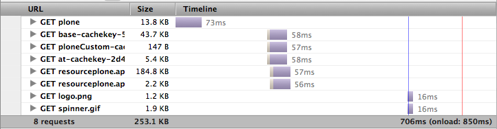
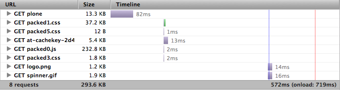

One of the most effective things to make Plone faster is ...
... to avoid Plone
Put all resources to the filesystem and use webassets.
except of beeing fast! it supports ...
- ... filters: LESS, CoffeeScript, minify, etc.
- ... YAML configuration

